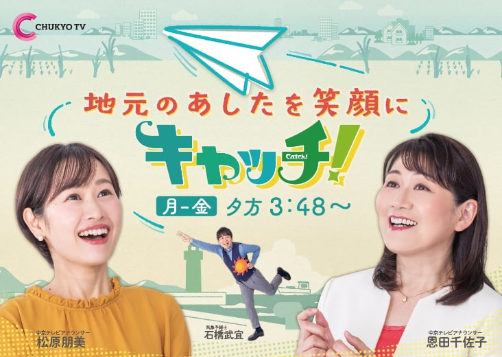
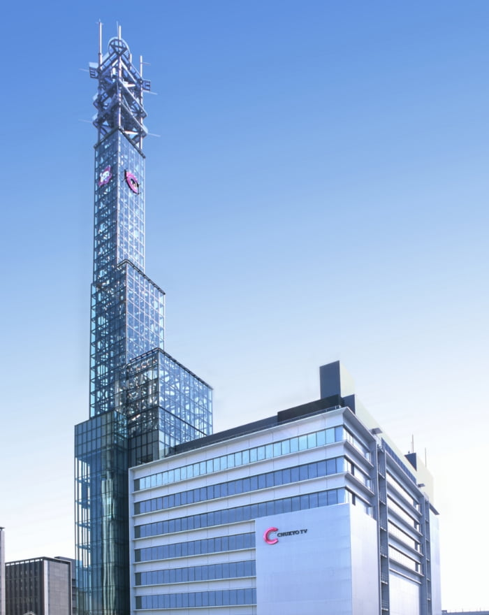

CHUKYO TV!
- 
全国ゴールデンで放送中の「オモウマい店」や地元密着の報道番組
「キャッチ！」などを制作する名古屋のテレビ局、中京テレビ！
…と、言われても、いったいどんな会社なのか、まだまだ分からないことが多いと思います。
CHUKYO TV!

そこで！
中京テレビの仕事紹介イベントを対面＆オンラインで開催！
学生の皆さんと年齢の近い若手社員が登場し、
仕事内容を詳しく、リアルな言葉でご紹介します！
さらに、「テレビ局って、忙しそう…」「番組制作以外にどんな仕事があるの？」などなど、
学生の皆さんが疑問＆不安に感じることに直接お答えいたします！
中京テレビのオープンカンパニー。
このイベントを通じて、テレビ業界に対する知識を増やしていただければと思います！
REAL & ONLINE
REAL & ONLINE
中京テレビ オープンカンパニー
- 日程
2023年10月1日（日）13:00～16:00（予定）
- 場所
中京テレビ本社 多目的スペース「プラザC」
MAP＆アクセスはこちら
〒453-8704 愛知県名古屋市中村区平池町四丁目60番地11
- 実施形式
- 対面＆オンラインのハイブリッド形式
- 募集対象
- 大学生全学年（3年生を中心に全学年参加可）
- 募集人数
- 対面：80名程度 オンライン：200名程度
インターンシップ参加者の声
各部署で働く方々の熱い想いがとても伝わってきました。
若手にもチャレンジする機会がたくさんあることなど、
とても働きがいのある職場であることを知りました。
今後テレビ業界は落ち込んでいくのではないかという不安がありましたが、テレビという枠組みがあるからこそ挑戦できることもまだまだたくさんあるのだと感じました。
テレビ局は文系のイメージだったが、
意外と理系でも活躍できると感じた。
テレビ局は文系のイメージだったが、
意外と理系でも活躍できると感じた。
地域に密着し、人々に寄り添うことを第一に取材を行うことが、中京テレビの強みであると知りました。